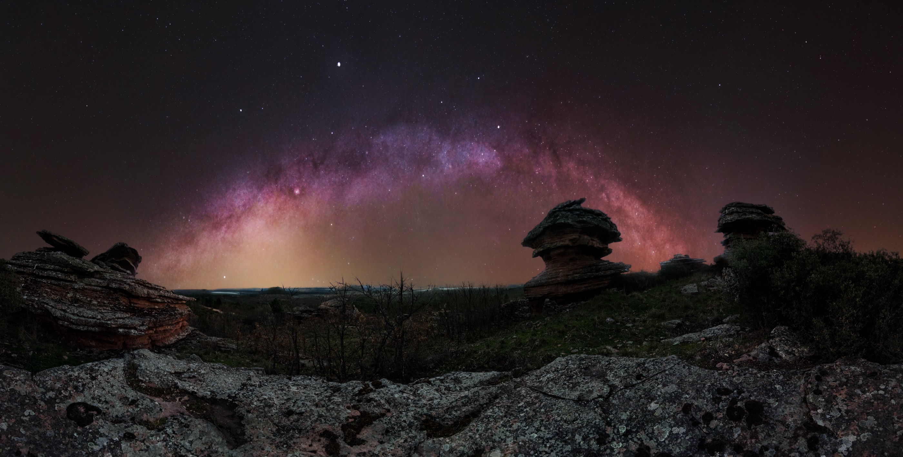
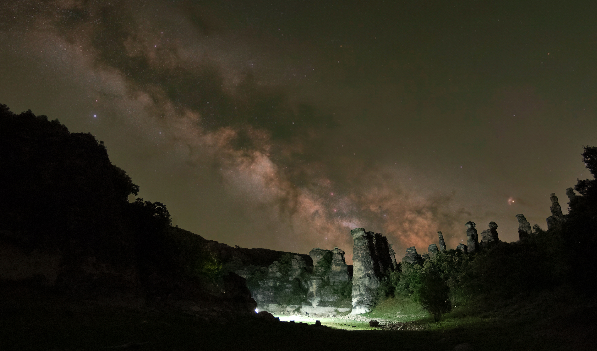
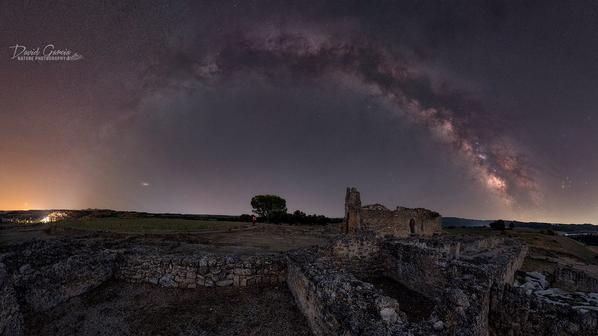

PROYECTO 01
El eclipse solar sobre Escamilla
La planificación del eclipse y su evolución sobre el paisaje, en diálogo con la iglesia y el horizonte de Escamilla.
Ver proyecto →Astrofotografía de paisaje
Cada proyecto comienza con un lugar, una historia y la planificación necesaria para encontrar el cielo adecuado. Aquí reúno algunas de esas experiencias en las que el paisaje, el firmamento y los fenómenos naturales comparten protagonismo.
PROYECTO 01
La planificación del eclipse y su evolución sobre el paisaje, en diálogo con la iglesia y el horizonte de Escamilla.
Ver proyecto →
PROYECTO 02
Arquitectura histórica y cielo nocturno, desde la presencia de Orión hasta una panorámica que reúne paisaje y firmamento.
Ver proyecto →
PROYECTO 03
El paisaje de Los Tormos de Sales bajo el cielo de invierno, con la Vía Láctea como protagonista de la composición.
Ver proyecto →
PROYECTO 04
Mientras fotografiaba este paisaje nocturno apareció un resplandor verdoso inesperado. Era airglow, una emisión natural de luz de las capas altas de la atmósfera. La sensibilidad de la cámara y la exposición nocturna permitieron registrar este fenómeno sutil, convirtiendo una sesión de paisaje en un descubrimiento sorprendente.
Página del proyecto próximamente
PROYECTO 05
En Guadalajara, las huellas del reino visigodo y el cielo nocturno se encuentran en un lugar excepcional: Recópolis, la ciudad fundada por Leovigildo en el año 578 en honor a su hijo Recaredo. Fotografiar la Vía Láctea completa sobre este paisaje es unir dos escalas de tiempo: la historia de una ciudad que nació hace más de catorce siglos y la luz de nuestra galaxia, extendiéndose sobre el horizonte. Una imagen en la que el patrimonio y el firmamento comparten protagonismo.
Página del proyecto próximamente